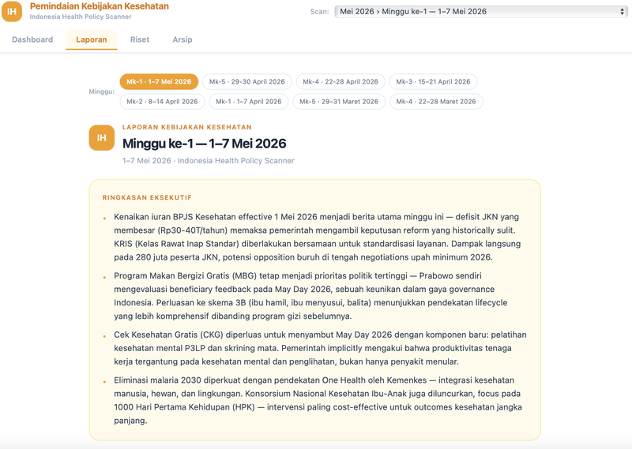
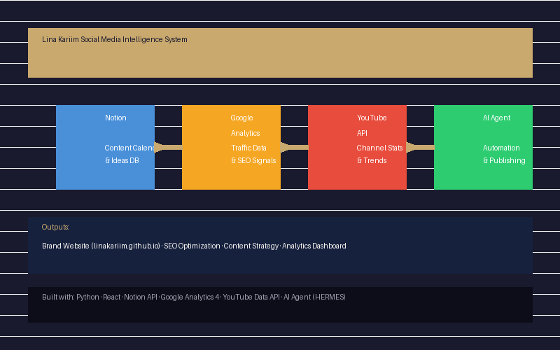
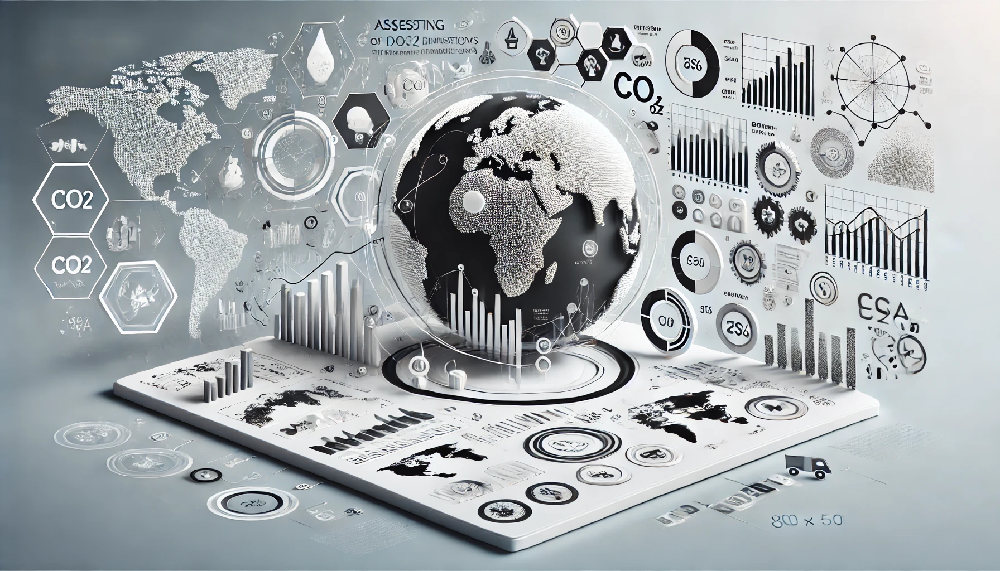

Indonesian Health Policy News Scanner
Category: AI Solutions
Date: 13/05/2025
The Problem: As a policy analyst, staying current with Indonesian health policy news means manually scanning dozens of news sources, government statements, and sector publications daily — a time-consuming task that still misses coverage gaps and makes it hard to see the bigger picture of how policies connect.
The Solution: An automated news intelligence pipeline that aggregates health policy coverage across sources, extracts key policy signals, and generates a weekly digest with trend mapping — so analysts spend time on insight, not搜集 (search-and-collect).
What I Built: A React dashboard with real-time news signal detection, a Python aggregation engine pulling from multiple Indonesian health news sources, source classification by reliability tier, and a weekly policy intelligence report — all orchestrated by an AI agent that structures and summarizes findings.
Skills Needed:

Lina Kariim Social Media Intelligence System
Category: AI Solutions
Date: 14/05/2025
The Problem: Running a YouTube channel + personal website as a solo creator means juggling content planning (Notion), monitoring SEO performance (Google Analytics), tracking YouTube analytics, and manually publishing and optimizing articles — a constant context-switch that eats creative time.
The Solution: A unified intelligence pipeline where an AI agent (HERMES) monitors content performance, automates SEO optimization, schedules publications, and generates performance reports — letting the creator focus on content quality, not logistics.
What I Built: Notion-powered content calendar, GA4 SEO dashboard, YouTube Data API integration, automated publishing workflow, SEO meta tag optimization, and a brand website (linakariim.github.io) — all connected through an AI agent that handles the operational layer.
Skills Needed:

Airlines Customer Segmentation
Category: Machine Learning
Date: 22/06/2024
This project aims to segment airline customers based on their behavior using the LRFMM (Length, Recency, Frequency, and Monetary) model. In this project, we collected customer data from airlines and applied LRFMM analysis to identify customer patterns and segments. With this technique, this project helps airlines understand their customer segments, which in turn can improve marketing strategies, service personalization and customer satisfaction. Implementing the LRFMM model allows companies to determine the most valuable customer segments and direct their marketing efforts more effectively.
Skills Needed:

Assessing the Dynamics of CO2 Emissions and Energy Consumption: A Global Perspective
Category: Exploratory Data Analysis
Date: 07/06/2024
This project aims to analyze the dynamics of CO2 emissions and energy consumption from a global perspective. We use exploratory data analysis techniques to understand patterns of CO2 emissions across different countries. The project helps identify factors influencing CO2 emissions and energy consumption, providing valuable insights for more sustainable energy policies. By analyzing historical data and current trends, this project offers a robust foundation for decision-making in climate change mitigation and energy planning. The findings can assist policymakers in devising strategies to reduce carbon footprints and optimize energy use, contributing to global sustainability efforts.
Skills Needed:

Streamlit Educational Dashboard
Category: Data Visualization
Date: 01/06/2024
This project involves creating a comprehensive educational dashboard using Streamlit. The dashboard provides real-time insights into various aspects of student performance and engagement. Key features include demographic analysis, accuracy based on lesson categories, user engagement metrics, top-performing and most active students, and user retention trends. The dashboard enables educators to identify areas needing improvement and to tailor interventions accordingly, enhancing the overall learning experience.
Skills Needed:

Overview of Indonesia Education Landscape
Category: Data Visualization
Date: 30/03/2024
This project provides an in-depth analysis of the educational landscape in Indonesia from 2021 to 2023. The dashboard highlights various aspects, including the gross participation rate across different education levels, the average education costs, and the quality gap as indicated by PISA scores in math, reading, and science. Additionally, it explores trends in the private Indonesian EdTech sector and their engagement with the government. The insights aim to identify key areas for improvement in educational access, quality, and financial sustainability.
Skills Needed: